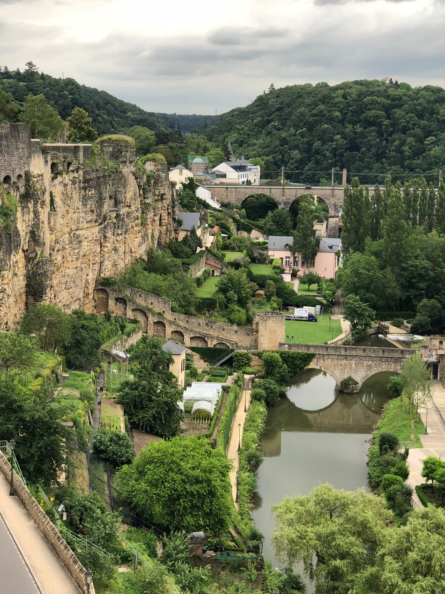
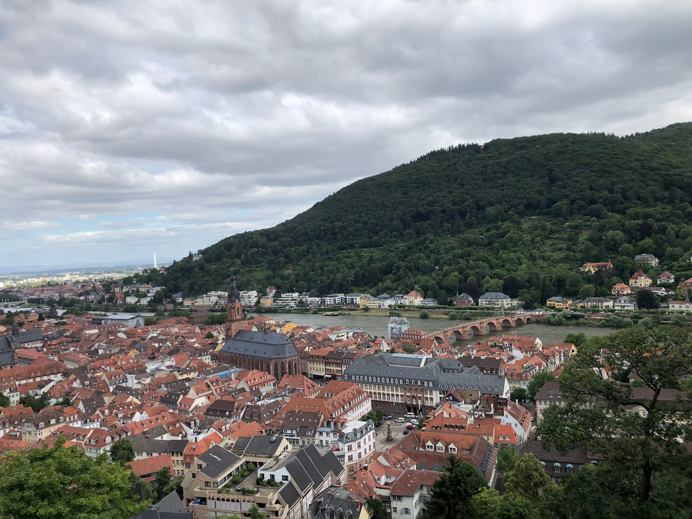
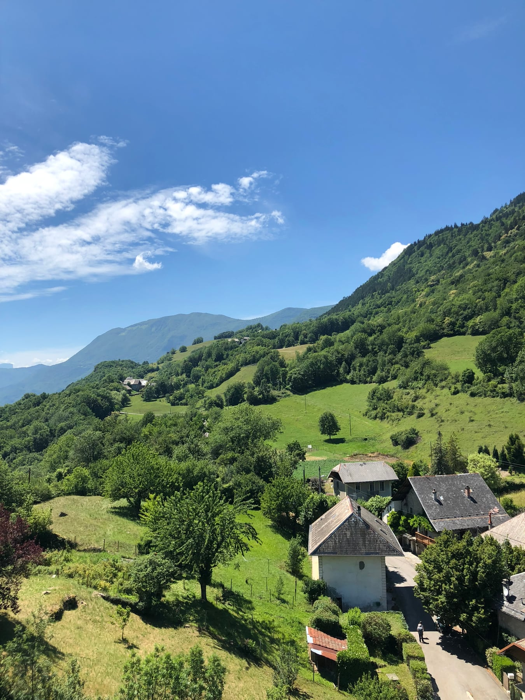
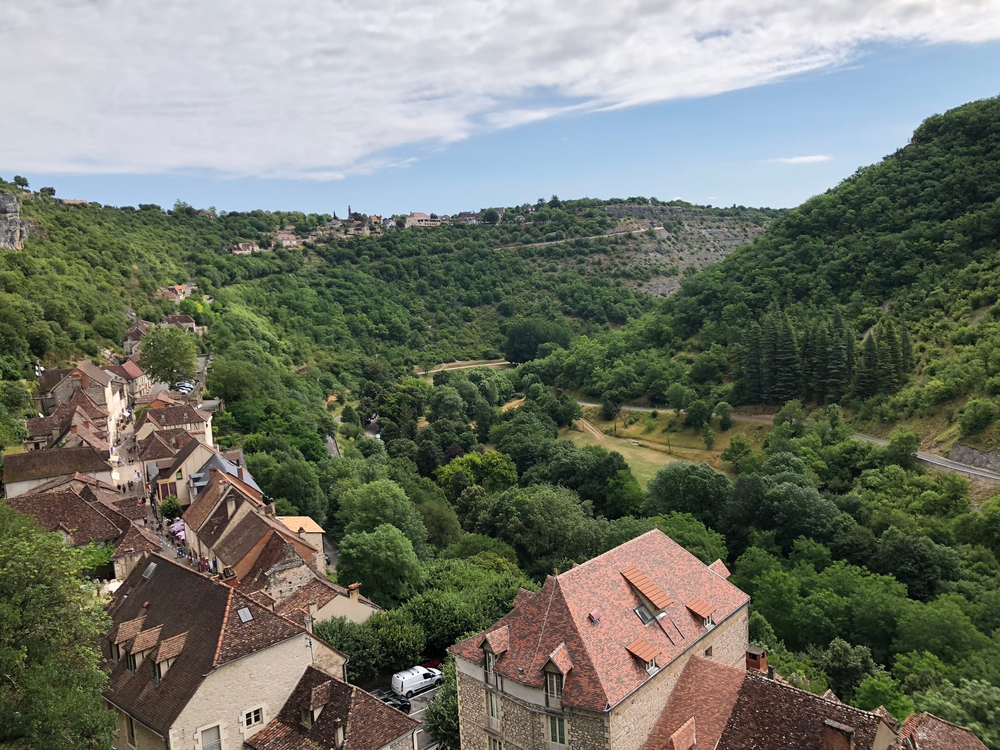
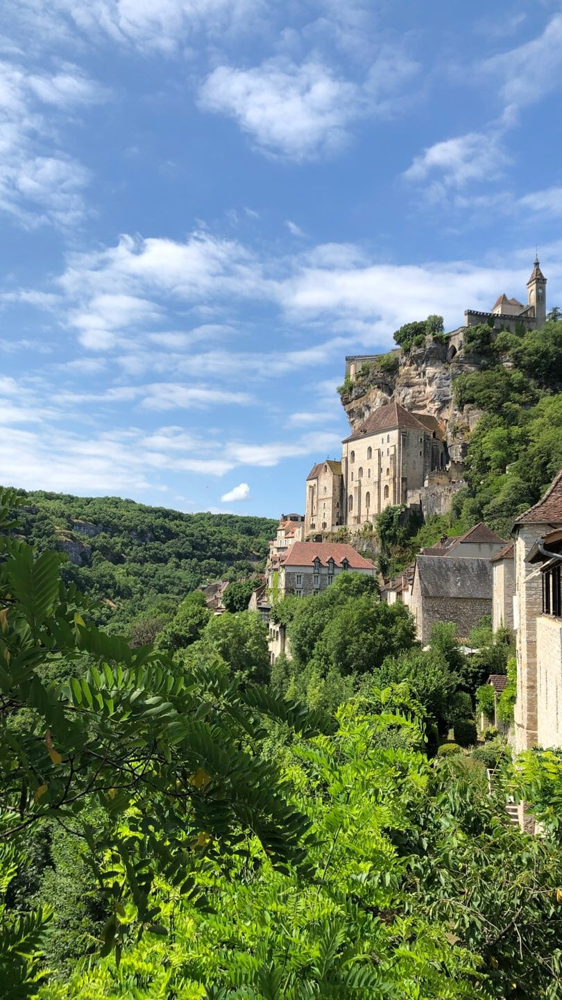
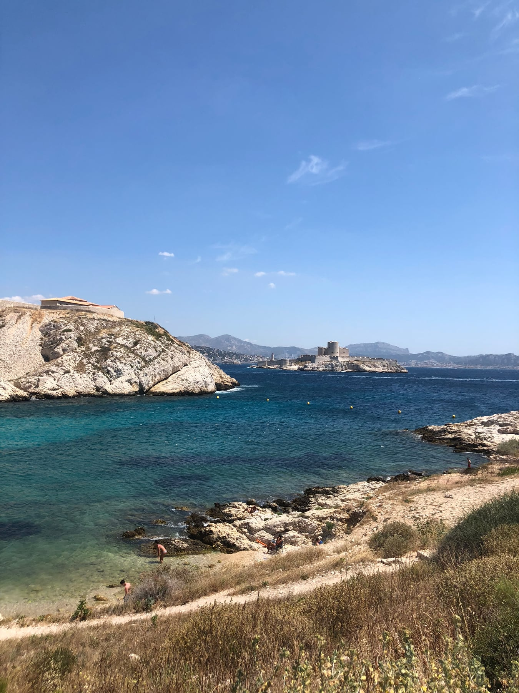
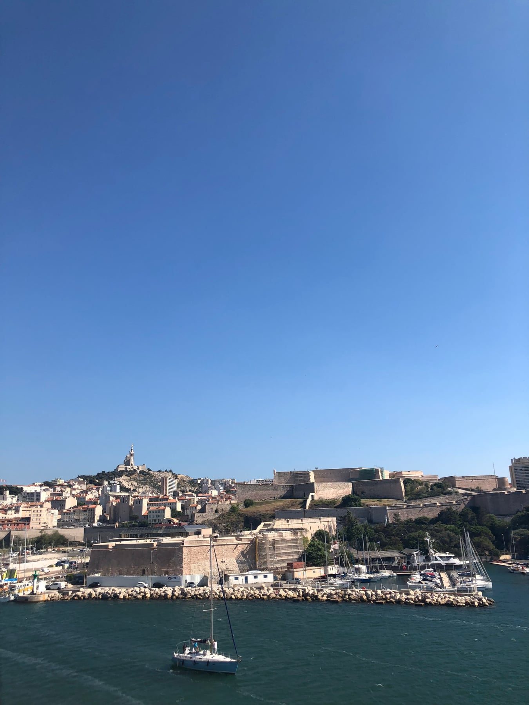
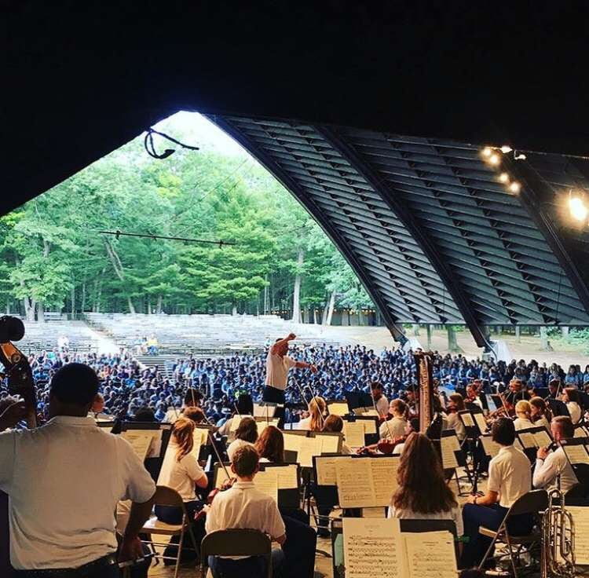

PHOTO JOURNAL / 2018
France, Germany,
Luxembourg & Switzerland
In 2018, I traveled through France, Germany, Luxembourg, and Switzerland with Blue Lake Fine Arts Camp's International Youth Symphony Orchestra. Over three weeks, the tour moved from community to community, pairing each performance with time spent living with local host families.
8 PHOTOGRAPHS

THE EXCHANGE
Music shaped the route, but the homestays shaped the experience. In each community, orchestra members were welcomed into local homes before coming together again to rehearse and perform.
THE PROGRAM
The concert program centered on Nikolai Rimsky-Korsakov, with Procession of the Nobles, Scheherazade, and Capriccio espagnol. For our vocal farewell, we sang The Lord Bless You and Keep You before moving on to the next community.


Three weeks measured in new homes, rehearsals, and concert halls.

THE ROUTE
We performed in Feulen, Böblingen, Villard-Bonnot, Aix-en-Provence, Millau, Figeac, and Saint-Céré during the European tour, then returned to Blue Lake in Twin Lake, Michigan, for a homecoming performance.



HOMECOMING
The tour ended back at Blue Lake in Twin Lake, Michigan, with a home concert: one final performance after three weeks of making music across communities and borders.
